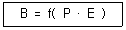
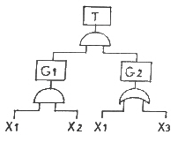
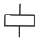
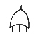
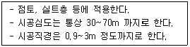

건설안전산업기사 (2019-04-27 기출문제)
1과목: 산업안전관리론
1. 매슬로우(Maslow)의 욕구단계 이론 중 제2단계의 욕구에 해당하는 것은?
- 사회적 욕구
- 안전에 대한 욕구
- 자아실현의 욕구
- 존경과 긍지에 대한 욕구
(정답률: 83%)

2. French와 Raven이 제시한, 리더가 가지고 있는 세력의 유형이 아닌 것은?
- 전문세력(expert power)
- 보상세력(reward power)
- 위임세력(entrust power)
- 합법세력(legitimate power)
(정답률: 69%)
3. 안전지식교육 실시 4단계에서 지식을 실제의 상황에 맞추어 문제를 해결해 보고 그 수법을 이해시키는 단계로 옳은 것은?
- 도입
- 제시
- 적용
- 확인
(정답률: 75%)
4. 다음 중 무재해운동의 기본이념 3원칙에 포함되지 않는 것은?
- 무의 원칙
- 선취의 원칙
- 참가의 원칙
- 라인화의 원칙
(정답률: 83%)
5. 산업안전보건법령상 안전검사 대상 유해·위험기계의 종류에 포함되지 않는 것은?
- 전단기
- 리프트
- 곤돌라
- 교류아크용접기
(정답률: 72%)
6. 산업안전보건법령상 특별안전·보건교육 대상 작업별 교육내용 중 밀폐공간에서의 작업 시 교육내용에 포함되지 않는 것은? (단, 그 밖에 안전·보건관리에 필요한 사항은 제외한다.)
- 산소농도측정 및 작업환경에 관한 사항
- 유해물질이 인체에 미치는 영향
- 보호구 착용 및 사용방법에 관한 사항
- 사고 시의 응급 처치 및 비상시 구출에 관한 사항
(정답률: 74%)
7. 하인리히의 재해발생 원인 도미노이론에서 사고의 직접원인으로 옳은 것은?
- 통제의 부족
- 관리 구조의 부적절
- 불안전한 행동과 상태
- 유전과 환경적 영향
(정답률: 79%)
8. 산업안전보건법령상 다음 그림에 해당하는 안전·보건표지의 종류로 옳은 것은?
- 부식성물질경고
- 산화성물질경고
- 인화성물질경고
- 폭발성물질경고
(정답률: 85%)
9. 산업안전보건법령상 상시 근로자수의 산출내역에 따라, 연간 국내공사 실적액이 50억원이고 건설업평균임금이 250만원이며, 노무비율은 0.06인 사업장의 상시 근로자수는?
- 10인
- 30인
- 33인
- 75인
(정답률: 47%)
10. 특성에 따른 안전교육의 3단계에 포함되지 않는 것은?
- 태도교육
- 지식교육
- 직무교육
- 기능교육
(정답률: 59%)
11. 주의의 수준에서 중간 수준에 포함되지 않는 것은?
- 다른 곳에 주의를 기울이고 있을 때
- 가시시야 내 부분
- 수면 중
- 일상과 같은 조건일 경우
(정답률: 81%)
12. 다음 중 작업표준의 구비조건으로 옳지 않은 것은?
- 작업의 실정에 적합할 것
- 생산성과 품질의 특성에 적합할 것
- 표현은 추상적으로 나타낼 것
- 다른 규정 등에 위배되지 않을 것
(정답률: 86%)
13. 다음 중 산업재해 통계에 관한 설명으로 적절하지 않은 것은?
- 산업재해 통계는 구체적으로 표시되어야 한다.
- 산업재해 통계는 안전 활동을 추진하기 위한 기초자료이다.
- 산업재해 통계만을 기반으로 해당 사업장의 안전수준을 추측한다.
- 산업재해 통계의 목적은 기업에서 발생한 산업재해에 대하여 효과적인 대책을 강구하기 위함이다.
(정답률: 82%)
14. 다음 중 안전 태도 교육의 원칙으로 적절하지 않은 것은?
- 청취위주의 대화를 한다.
- 이해하고 납득한다.
- 항상 모범을 보인다.
- 지적과 처벌 위주로 한다.
(정답률: 84%)
15. 다음 중 산업심리의 5대 요소에 해당하지 않는 것은?
- 적성
- 감정
- 기질
- 동기
(정답률: 60%)
16. 다음 중 위험예지훈련 4라운드의 순서가 올바르게 나열된 것은?
- 현상파악 → 본질추구 → 대책수립 → 목표설정
- 현상파악 → 대책수립 → 본질추구 → 목표설정
- 현상파악 → 본질추구 → 목표설정 → 대책수립
- 현상파악 → 목표설정 → 본질추구 → 대책수립
(정답률: 74%)
17. 산업안전보건법령상 안전모의 종류(기호) 중 사용 구분에서 “물체의 낙하 또는 비래 및 추락에 의한 위험을 방지 또는 경감하고, 머리부위 감전에 의한 위험을 방지하기 위한 것”으로 옳은 것은?
- A
- AB
- AE
- ABE
(정답률: 75%)
18. 레빈(Lewin)은 인간행동과 인간의 조건 및 환경조건의 관계를 다음과 같이 표시하였다. 이 때 'f'의 의미는?

- 행동
- 조명
- 지능
- 함수
(정답률: 79%)
19. 적응기제(Adjustment Mechanism)의 유형에서 “동일화(identification)”의 사례에 해당하는 것은?
- 운동시합에 진 선수가 컨디션이 좋지 않았다고 한다.
- 결혼에 실패한 사람이 고아들에게 정열을 쏟고 있다.
- 아버지의 성공을 자신의 성공인 것처럼 자랑하며 거만한 태도를 보인다.
- 동생이 태어난 후 초등학교에 입학한 큰 아이가 손가락을 빨기 시작했다.
(정답률: 79%)
20. 산업안전보건법령상 산업재해 조사표에 기록되어야 할 내용으로 옳지 않은 것은?
- 사업장 정보
- 재해정보
- 재해발생개요 및 원인
- 안전교육 계획
(정답률: 75%)
2과목: 인간공학 및 시스템안전공학
21. 인간오류의 분류 중 원인에 의한 분류의 하나로, 작업자 자신으로부터 발생하는 에러로 옳은 것은?
- Command error
- Secondary error
- Primary error
- Third error
(정답률: 65%)
22. 정보를 전송하기 위해 청각적 표시장치를 이용하는 것이 바람직한 경우로 적합한 것은?
- 전언이 복잡한 경우
- 전언이 이후에 재참조되는 경우
- 전언이 공간적인 사건을 다루는 경우
- 전언이 즉각적인 행동을 요구하는 경우
(정답률: 77%)
23. 고장형태 및 영향분석(FMEA : Failure Mode and Effect Analyis)에서 치명도 해석을 포함시킨 분석 방법으로 옳은 것은?
- CA
- ETA
- FMETA
- FMECA
(정답률: 62%)
24. 조종장치를 통한 인간의 통제 아래 기계가 동력원을 제공하는 시스템의 형태로 옳은 것은?
- 기계화 시스템
- 수동 시스템
- 자동화 시스템
- 컴퓨터 시스템
(정답률: 62%)
25. 음의 강약을 나타내는 기본 단위는?
- dB
- pont
- hertz
- diopter
(정답률: 78%)
26. FTA에서 모든 기본사상이 일어났을 때 톱(top)사상을 일으키는 기본사상의 집합을 무엇이라 하는가?
- 컷셋(Cut set)
- 최소 컷셋(Minimal Cut set)
- 패스셋(Path set)
- 최소 패스셋(Minamal Path set)
(정답률: 62%)
27. 일반적으로 인체에 가해지는 온·습도 및 기류 등의 외적변수를 종합적으로 평가하는 데에는 “불쾌지수”라는 지표가 이용된다. 불쾌지수의 계산식이 다음과 같은 경우, 건구온도와 습구온도의 단위로 옳은 것은?
- 실효온도
- 화씨온도
- 절대온도
- 섭씨온도
(정답률: 66%)
28. 레버를 10° 움직이면 표시장치는 1cm 이동하는 조종 장치가 있다. 레버의 길이가 20cm 라고 하면 이 조종 장치의 통제표시비(C/D 비)는 약 얼마인가?
- 1.27
- 2.38
- 3.49
- 4.51
(정답률: 43%)
29. 작업장 내부의 추천반사율이 가장 낮아야 하는 곳은?
- 벽
- 천장
- 바닥
- 가구
(정답률: 74%)
30. 서서 하는 작업의 작업대 높이에 대한 설명으로 옳지 않은 것은?
- 정밀작업의 경우 팔꿈치 높이보다 약간 높게 한다.
- 경작업의 경우 팔꿈치 높이보다 약간 낮게 한다.
- 중작업의 경우 경작업의 작업대 높이보다 약간 낮게 한다.
- 작업대의 높이는 기준을 지켜야 하므로 높낮이가 조절되어서는 안 된다.
(정답률: 77%)
31. 다음의 FT도에서 몇 개의 미니멀패스셋(minimal path sets)이 존재하는가?

- 1개
- 2개
- 3개
- 4개
(정답률: 51%)
32. 위팔은 자연스럽게 수직으로 늘어뜨린 채, 아래팔만을 편하게 뻗어 작업할 수 있는 범위는?
- 정상작업역
- 최대작업역
- 최소작업역
- 작업포락면
(정답률: 60%)
33. 인간의 정보처리 기능 중 그 용량이 7개 내외로 작아, 순간적 망각 등 인적 오류의 원인이 되는 것은?
- 지각
- 작업기억
- 주의력
- 감각보관
(정답률: 63%)
34. FT도에 사용되는 논리기호 중 AND 게이트에 해당하는 것은?




(정답률: 70%)
35. 인간의 시각특성을 설명한 것으로 옳은 것은?
- 적응은 수정체의 두께가 얇아져 근거리의 물체를 볼 수 있게 되는 것이다.
- 시야는 수정체의 두께 조저로 이루어진다.
- 망막은 카메라의 렌즈에 해당된다.
- 암조응에 걸리는 시간은 명조응보다 길다.
(정답률: 61%)
36. 예비위험분석(PHA)에 대한 설명으로 옳은 것은?
- 관련된 과거 안전점검결과의 조사에 적절하다.
- 안전관련 법규 조항의 준수를 위한 조사방법이다.
- 시스템 고유의 위험성을 파악하고 예상되는 재해의 위험 수준을 결정한다.
- 초기 단계에서 시스템 내의 위험요소가 어떠한 위험상태에 있는가를 정성적으로 평가하는 것이다.
(정답률: 65%)
37. 그림과 같은 시스템의 신뢰도로 옳은 것은? (단, 그림의 숫자는 각 부품의 신뢰도이다.)
- 0.6261
- 0.7371
- 0.8481
- 0.9591
(정답률: 60%)
38. 체계 설계 과정의 주요 단계 중 가장 먼저 실시되어야 하는 것은?
- 기본설계
- 계면설계
- 체계의 정의
- 목표 및 성능 명세 결정
(정답률: 65%)
39. 다음 중 생리적 스트레스를 전기적으로 측정하는 방법으로 옳지 않은 것은?
- 뇌전도(EEG)
- 근전도(EMG)
- 전기 피부 반응(GSR)
- 안구 반응(EOG)
(정답률: 55%)
40. 신뢰성과 보전성 개선을 목적으로 하는 효과적인 보전기록 자료에 해당하지 않는 것은?
- 설비이력카드
- 자재관리표
- MTBF 분석표
- 고장원인대책표
(정답률: 63%)
3과목: 건설시공학
41. 강구조물 제작 시 마킹(금긋기)에 관한 설명으로 옳지 않은 것은?
- 강판 절단이나 형강 절단 등, 외형 절단을 선행하는 부재는 미리 부재 모양별로 마킹 기준을 정해야 한다.
- 마킹검사는 띠철이나 형판 또는 자동가공기(CNC)를 사용하여 정확히 마킹되었는가를 확인한다.
- 주요 부재의 강판에 마킹할 때에는 펀치(punch) 등을 사용한다.
- 마킹 시 용접열에 의한 수축 여유를 고려하여 최종 교정, 다듬질 후 정확한 치수를 확보할 수 있도록 조치해야 한다.
(정답률: 71%)
42. 철근콘크리트공사에서 거푸집의 상호 간 간격을 유지하는데 사용하는 것은?
- 폼 데코(form deck)
- 세퍼레이터(separator)
- 스페이서(spacer)
- 파이프 서포트(pipe support)
(정답률: 65%)
43. 굴착, 상차, 운반, 정지 작업 등을 할 수 있는 기계로, 대량의 토사를 고속으로 운반하는데 적당한 기계는?
- 불도저
- 앵글도저
- 로더
- 캐리올 스크레이퍼
(정답률: 52%)
44. 사질지반에서 지하수를 강제로 뽑아내어 지하수위를 낮추어서 기초공사를 하는 공법은?
- 케이슨 공법
- 웰포인트 공법
- 샌드드레인 공법
- 레어먼드파일 공법
(정답률: 67%)
45. 굴착토사와 안정액 및 공수내의 혼합물을 드릴 파이프 내부를 통해 강제로 역순환시켜 지상으로 배출하는 공법으로 다음과 같은 특징이 있는 현장타설 콘크리트 말뚝공법은?

- 어스드릴공법
- 리버스서큘레이션공법
- 뉴메틱케이슨공법
- 심초공법
(정답률: 68%)
46. 철근콘크리트구조에서 철근이음 시 유의사항으로 옳지 않은 것은?
- 동일한 곳에 철근 수의 반 이상을 이어야 한다.
- 이음의 위치는 응력이 큰 곳을 피하고 엇갈리게 잇는다.
- 주근의 이음은 인장력이 가장 작은 곳에 두어야 한다.
- 큰 보의 경우 하부주근의 이음 위치는 보 경간의 양단부이다.
(정답률: 64%)
47. KCS에 따른 철근 가공 및 이음 기준에 관한 내용으로 옳지 않은 것은?
- 철근은 상온에서 가공하는 것을 원칙으로 한다.
- 철근상세도에 철근의 구부리는 내면 반지름이 표시되어 있지 않은 때에는 콘크리트 구조설계기준에 규정된 구부림의 최소 내면 반지름 이상으로 철근을 구부려야 한다.
- D32 이하의 철근은 겹침이음을 할 수 없다.
- 장래의 이음에 대비하여 구조물로부터 노출시켜 놓은 철근은 손상이나 부식이 생기지 않도록 보호하여야 한다.
(정답률: 68%)
48. 토공사에서 사면의 안정성 검토에 직접적으로 관계가 없는 것은?
- 흙의 입도
- 사면의 경사
- 흙의 단위체적 중량
- 흙의 내부마찰각
(정답률: 50%)
49. 철골공사의 철골부재 용접에서 용접 결함이 아닌 것은?
- 언더컷(under cut)
- 오버랩(overlap)
- 블로우홀(blow hole)
- 루트(root)
(정답률: 70%)
50. 지상에서 일정 두께의 폭과 길이로 대지를 굴착하고 지반 안정액으로 공벽의 붕괴를 방지하면서 철근콘크리트벽을 만들어 이를 가설 흙막이벽 또는 본 구조물의 옹벽으로 사용하는 공법은?
- 슬러리월공법
- 어스앵커공법
- 엄지말뚝공법
- 시트파일공법
(정답률: 60%)
51. 당해 공사의 특수한 조건에 따라 표준시방서에 대하여 추가, 변경, 삭제를 규정하는 시방서는?
- 특기시방서
- 안내시방서
- 자료시방서
- 성능시방서
(정답률: 74%)
52. 독립기초에서 지중보의 역할에 관한 설명으로 옳은 것은?
- 흙의 허용 지내력도를 크게 한다.
- 주각을 서로 연결시켜 고정상태로 하여 부동침하를 방지한다.
- 지반을 압밀하여 지반강도를 증가시킨다.
- 콘크리트의 압축강도를 크게 한다.
(정답률: 56%)
53. 계획과 실제의 작업상황을 지속적으로 측정하여 최종 사업비용과 공정을 예측하는 기법은?
- CAD
- EVMS
- PMIS
- WBS
(정답률: 48%)
54. 슬라이딩 폼에 관한 설명으로 옳지 않은 것은?
- 내·외부 비계발판을 따로 준비해야 하므로 공기가 지연될 수 있다.
- 활동(滑動) 거푸집이라고도 하며 사일로 설치에 사용할 수 있다.
- 요오크로 서서히 끌어 올리며 콘크리트를 부어 넣는다.
- 구조물의 일체성확보에 유효하다.
(정답률: 66%)
55. 데크플레이트에 관한 설명으로 옳지 않은 것은?
- 합판거푸집에 비해 중량이 큰 편이다.
- 별도의 동바리가 필요하지 않다.
- 철근트러스형은 내화피복이 불필요하다.
- 시공환경이 깨끗하고 안전사고 위험이 적다.
(정답률: 38%)
56. 주문받은 건설업자가 대상계획의 기업·금융, 토지조달, 설계, 사공, 기계기구 설치 등 주문자가 필요로 하는 모든 것을 조달하여 주문자에게 인도하는 도급계약 방식은?
- 공동도급
- 실비정산 보수가산도급
- 턴키(turn-key)도급
- 일식도급
(정답률: 73%)
57. 자연시료의 압축강도가 6 MPa이고, 이긴시료의 압축강도가 4 MPa이라면 예민비는 얼마인가?
- -2
- 0.67
- 1.5
- 2
(정답률: 51%)
58. 콘크리트 보양방법 중 초기강도가 크게 발휘되어 거푸집을 가장 빨리 제거할 수 있는 방법은?
- 살수보양
- 수중보양
- 피막보양
- 증기보양
(정답률: 61%)
59. 콘크리트 배합설계 시 강도에 가장 큰 영향을 미치는 요소는?
- 모래와 자갈의 비율
- 물과 시멘트의 비율
- 시멘트와 모래의 비율
- 시멘트와 자갈의 비율
(정답률: 74%)
60. 철골 용접 관련 용어 중 스패터(spatter)에 관한 설명으로 옳은 것은?
- 전단절단에서 생기는 뒤꺾임 현상
- 수동 가스절단에서 절단선이 곧지 못하여 생기는 잘록한 자국의 흔적
- 철골용접에서 용접부의 상부를 덮는 불순물
- 철골용접 중 튀어나오는 슬래그 및 금속입자
(정답률: 57%)
4과목: 건설재료학
61. 진주석 또는 흑요석 등을 900~1200℃로 소성한 후에 분쇄하여 소생팽창하면 만들어지는 작은 입자에 접착제 및 무기질 섬유를 균등하게 혼합하여 성형한 제품은?
- 규조토 보온재
- 규산칼슘 보온재
- 질석 보온재
- 펄라이트 보온재
(정답률: 62%)
62. 중용열포틀랜드시멘트에 관한 설명으로 옳지 않은 것은?
- 수화열이 작고 수화속도가 비교적 느리다.
- C3A 가 많으므로 내황산염성이 작다.
- 건조수축이 작다.
- 건축용 매스콘크리트에 사용된다.
(정답률: 50%)
63. 골재의 함수상태 사이의 관계를 옳게 나타낸 것은?
- 유효흡수량 = 표건상태 - 기건상태
- 흡수량 = 습윤상태 - 표건상태
- 전함수량 = 습윤상태 - 기건상태
- 표면수량 = 기건상태 – 절건상태
(정답률: 50%)
64. 바닥 바름재료 백시멘트와 안료를 사용하며 종석으로 화강암, 대리석 등을 사용하고 갈기로 마감을 하는 것은?
- 리신 바름
- 인조석 바름
- 라프코트
- 테라조 바름
(정답률: 56%)
65. 다음 중 흡음재료로 보기 어려운 것은?
- 연질우레아폼
- 석고보드
- 테라조
- 연질섬유판
(정답률: 64%)
66. 콘크리트용 골재의 입도에 관한 설명으로 옳지 않은 것은?
- 입도란 골재의 작고 큰 입자의 혼합된 정도를 말한다.
- 입도가 적당하지 않은 골재를 사용할 경우에는 콘크리트의 재료분리가 발생하기 쉽다.
- 골재의 입도를 표시하는 방법으로 조립률이 있다.
- 골재의 입도는 불레인 시험으로 구한다.
(정답률: 62%)
67. 블론 아스팔트를 용제에 녹인 것으로 액상이며, 아스팔트 방수의 바탕 처리재로 이용되는 것은?
- 아스팔트 펠트
- 콜타르
- 아스파트 프라이머
- 피치
(정답률: 60%)
68. 단열재에 관한 설명으로 옳지 않은 것은?
- 열전도율이 낮은 것일수록 단열효과가 좋다.
- 열관류율이 높은 재료는 단열성이 낮다.
- 같은 두께인 경우 경량재료인 편이 단열효과가 나쁘다.
- 단열재는 보통 다공질의 재료가 많다.
(정답률: 56%)
69. 점토소성제품의 흡수성이 큰 것부터 순서대로 옳게 나열한 것은?
- 토기 ＞ 도기 ＞ 석기 ＞ 자기
- 토기 ＞ 도기 ＞ 자기 ＞ 석기
- 도기 ＞ 토기 ＞ 석기 ＞ 자기
- 도기 ＞ 토기 ＞ 자기 ＞석기
(정답률: 68%)
70. 화강암이 열을 받았을 때 파괴되는 가장 주된 원인은?
- 화학성분의 열분해
- 조직의 용융
- 조암광물의 종류에 따른 열팽창계수의 차이
- 온도상승에 따른 압축강도 저하
(정답률: 61%)
71. 목재의 함수율에 관한 설명으로 옳지 않은 것은?
- 함수율이 30% 이상에서는 함수율의 증감에 따라 강도의 변화가 심하다.
- 기건재의 함수율은 15% 정도이다.
- 목재의 진비중은 일반적으로 1.54 정도이다.
- 목재의 함수율 30% 정도를 섬유포화점이라 한다.
(정답률: 58%)
72. 콘크리트에 사용하는 혼화제 중 AE제의 특징으로 옳지 않은 것은?
- 워커빌리티를 개선시킨다.
- 블리딩을 감소시킨다.
- 마모에 대한 저항성을 증대시킨다.
- 압축강도를 증가시킨다.
(정답률: 44%)
73. 불림하거나 담금질한 강을 다시 200~600℃로 가열한 후에 공기 중에서 냉각하는 처리를 말하며, 내부응력을 제거하며 연성과 인성을 크게 하기 위해 실시하는 것은?
- 뜨임질
- 압출
- 중합
- 단조
(정답률: 69%)
74. 탄소함유량이 많은 것부터 순서대로 옳게 나열한 것은?
- 연철 ＞ 탄소강 ＞ 주철
- 연철 ＞ 주철 ＞ 탄소강
- 탄소강 ＞ 주철 ＞연철
- 주철 ＞ 탄소강 ＞ 연철
(정답률: 53%)
75. 그물유리라고도 하며 주로 방화 및 방재용으로 사용하는 유리는?
- 강화유리
- 망입유리
- 복층유리
- 열선반사유리
(정답률: 68%)
76. 금속면의 보호와 부식방지를 목적으로 사용하는 방청도료와 가장 거리가 먼 것은?
- 광명단조합페인트
- 알루미늄 도료
- 에칭프라이머
- 캐슈수지 도료
(정답률: 43%)
77. 기본 점성이 크며 내수성, 내약품성, 전기 절연성이 우수하고 금속, 플라스틱, 도자기, 유리, 콘크리트 등의 접합에 사용되는 만능형 접착제는?
- 아크릴수지 접착제
- 페놀수지 접착제
- 에폭시수지 접착제
- 멜라미수지 접착제
(정답률: 68%)
78. 열선흡수유리의 특징에 관한 설명으로 옳지 않은 것은?
- 여름철 냉방부하를 감소시킨다.
- 자외선에 의한 상품 등의 변색을 방지한다.
- 유리의 온도 상승이 매우 적어 실내의 기온에 별로 영향을 받지 않는다.
- 채광을 요구하는 진열장에 이용된다.
(정답률: 54%)
79. 내화벽돌은 최소 얼마 이상의 내화도를 가진 것을 의미하는가?
- SK 26
- SK 28
- SK 30
- SK 32
(정답률: 51%)
80. 합판에 관한 설명으로 옳은 것은?
- 곡면 가공이 어렵다.
- 함수율이 변화에 따른 신축변형이 적다.
- 2매 이상의 박판을 짝수배로 겹쳐 만든 것이다.
- 합판 제조 시 목재의 손실이 많다.
(정답률: 45%)
5과목: 건설안전기술
81. 추락방지용 방망 그물코의 모양 및 크기의 기준으로 옳은 것은?
- 원형 또는 사각으로서 그 크기는 5cm 이하이어야 한다.
- 원형 또는 사각으로서 그 크기는 10cm 이하이어야 한다.
- 사각 또는 마름모로서 그 크기는 5cm 이하이어야 한다.
- 사각 또는 마름모로서 그 크기는 10cm 이하이어야 한다.
(정답률: 63%)
82. 철근콘크리트 공사 시 활용되는 거푸집의 필요조건이 아닌 것은?
- 콘크리트의 하중에 대해 뒤틀림이 없는 강도를 갖출 것
- 콘크리트 내 수분 등에 대한 물빠짐이 원화한 구조를 갖출 것
- 최소한의 재료로 여러 번 사용할 수 있는 전용성을 가질 것
- 거푸집은 조립·해체·운반이 용이하도록 할 것
(정답률: 62%)
83. 콘크리트를 타설할 때 안전상 유의하여야 할 사항으로 옳지 않은 것은?
- 콘크리트를 치는 도중에는 거푸집, 지보공 등의 이상유무를 확인한다.
- 진동기 사용 시 지나친 진동은 거푸집 도괴의 원인이 될 수 있으므로 적절히 사용해야 한다.
- 최상부의 슬래브는 되도록 이어붓기를 하고 여러 번에 나누어 콘크리트를 타설한다.
- 타워에 연결되어 있는 슈트의 접속이 확실한지 확인한다.
(정답률: 67%)
84. 연약지반을 굴착할 때, 흙막이벽 뒷쪽 흙의 중량이 바닥의 지지력보다 커지면, 굴착저면에서 흑이 부풀어 오르는 현상은?
- 슬라이딩(Sliding)
- 보일링(Boiling)
- 파이핑(Piping)
- 히빙(Heaving)
(정답률: 64%)
85. 말비계를 조립하여 사용하는 경우에 준수해야 하는 사항으로 옳지 않은 것은?
- 지주부재의 하단에는 미끄럼 방지장치를 한다.
- 근로자는 양측 끝부분에 올라서서 작업하도록 한다.
- 지주부재와 수평면의 기울기를 75° 이하로 한다.
- 말비계의 높이가 2m를 초과하는 경우에는 작업발판의 폭을 40cm 이상으로 한다.
(정답률: 67%)
86. 철근콘크리트 슬래브에 발생하는 응력에 대한 설명으로 옳지 않은 것은?
- 전단력은 일반적으로 단부보다 중앙부에서 크게 작용한다.
- 중앙부 하부에는 인장응력이 발생한다.
- 단부 하부에는 압축응력이 발생한다.
- 휨응력은 일반적으로 슬래브의 중앙부에서 크게 작용한다.
(정답률: 46%)
87. 슬레이트, 선라이트 등 강도가 약한 재료로 덮은 지붕 위에서 작업을 할 때 발이 빠지는 등 근로자의 위험을 방지하기 위하여 필요한 발판의 폭 기준은?
- 10cm 이상
- 20cm 이상
- 25cm 이상
- 30cm 이상
(정답률: 65%)
88. 가설구조물이 갖추어야 할 구비요건과 가장 거리가 먼 것은?
- 영구성
- 경제성
- 작업성
- 안전성
(정답률: 69%)
89. 굴착면 붕괴의 원인과 가장 거리가 먼 것은?
- 사면경사의 증가
- 성토 높이의 감소
- 공사에 의한 진동하중의 증가
- 굴착높이의 증가
(정답률: 63%)
90. 다음 중 유해·위험방지계획서 작성 및 제출대상에 해당되는 공사는?
- 지상높이가 20m 인 건축물의 해체공사
- 깊이 9.5m인 굴착공사
- 최대 지간거리가 50m인 교량건설공사
- 저수용량 1천만톤인 용수전용 댐
(정답률: 61%)
91. 산업안전보건관리비에 관한 설명으로 옳지 않은 것은?
- 발주자는 수급인이 안전관리비를 다른 목적으로 사용한 금액에 대해서는 계약금액에서 감액 조정할 수 있다.
- 발주자는 수급인이 안전관리비를 사용하지 아니한 금액에 대하여는 반환을 요구할 수 있다.
- 자기공사자는 원가계산에 의한 예정가격 작성 시 안전관리비를 계상한다.
- 발주자는 설계변경 등으로 대상액의 변동이 있는 경우 공사 완료 후 정산하여야 한다.
(정답률: 58%)
92. 정기안전점검 결과 건설공사의 물리적·기능적 결함 등이 발견되어 보수·보강 등의 조치를 하기 위하여 필요한 경우에 실시하는 것은?
- 자체안전점검
- 정밀안전점검
- 상시안전점검
- 품질관리점검
(정답률: 65%)
93. 사다리식 통로 등을 설치하는 경우 발판과 벽과의 사이는 최소 얼마 이상의 간격을 유지하여야 하는가?
- 10cm 이상
- 15cm 이상
- 20cm 이상
- 25cm 이상
(정답률: 61%)
94. 공사현장에서 낙하물방지망 또는 방호선반을 설치할 때 설치높이 및 벽면으로부터 내민길이 기준으로 옳은 것은?
- 설치높이 : 10m 이내마다, 내민길이 2m 이상
- 설치높이 : 15m 이내마다, 내민길이 2m 이상
- 설치높이 : 10m 이내마다, 내민길이 3m 이상
- 설치높이 : 15m 이내마다, 내민길이 3m 이상
(정답률: 53%)
95. 산업안전보건기준에 관한 규칙에 따른 토사굴착 시 굴착면의 기울기기준으로 옳지 않은 것은?(2021년 11월 19일 개정된 규정 적용됨)
- 보통흑인 습지 – 1 : 1 ~ 1 : 1.5
- 풍화암 – 1 : 1.0
- 연암 – 1 : 1.0
- 보통흑인 건지 – 1 : 1.2 ~ 1 : 5
(정답률: 54%)
96. 시스템 비계를 사용하여 비계를 구성하는 경우에 준수하여야 할 사항으로 옳지 않은 것은?
- 수직재와 수직재의 연결철물은 이탈되지 않도록 견고한 구조로 할 것
- 수직재·수평재·가새재를 견고하게 연결하는 구조가 되도록 할 것
- 수직재와 받침철물의 연결부 겹침길이는 받침철물 전체길이의 4분의 1 이상이 되도록 할 것
- 수평재는 수직재와 직각으로 설치하여야 하며, 체결 후 흔들림이 없도록 견고하게 설치할 것
(정답률: 68%)
97. 가설통로를 설치하는 경우 준수하여야 할 기준으로 옳지 않은 것은?
- 견고한 구조로 할 것
- 경사는 30° 이하로 할 것
- 경사가 30°를 초과하는 경우에는 미끄러지지 아니하는 구조로 할 것
- 수직갱에 가설된 통로의 길이가 15m 이상인 경우에는 10m 이내마다 계단참을 설치할 것
(정답률: 56%)
98. 근로자가 추락하거나 넘어질 위험이 있는 장소에서 추락방호망의 설치 기준으로 옳지 않은 것은?
- 망의 처짐은 짧은 변 길이의 10% 이상이 되도록 할 것
- 추락방호망은 수평으로 설치할 것
- 건축물 등의 바깥쪽으로 설치하는 경우 추락방호망의 내민 길이는 벽면으로부터 3m 이상 되도록 할 것
- 추락방호망의 설치위치는 가능하면 작업면으로부터 가까운 지점에 설치하여야 하며, 작업면으로부터 망의 설치지점까지의 수직거리는 10m를 초과하지 아니할 것
(정답률: 46%)
99. 차랑계 하역운반기계에 화물을 적재할 때의 준수사항과 거리가 먼 것은?
- 하중이 한쪽으로 치우지지 않도록 적재할 것
- 구내운반차 또는 화물자동차의 경우 화물의 붕괴 또는 낙하에 의한 위험을 방지하기 위하여 화물에 로프를 거는 등 필요한 조치를 할 것
- 운전자의 시야를 가리지 않도록 화물을 적재할 것
- 제동장치 및 조정장치 기능의 이상 유무를 점검할 것
(정답률: 65%)
100. 무한궤도식 장비와 타이어식(차륜식) 장비의 차이점에 관한 설명으로 옳은 것은?
- 무한궤도식은 기동성이 좋다.
- 타이어식은 승차감과 주행성이 좋다.
- 무한궤도식은 경사지반에서의 작업에 부적당하다.
- 타이어식은 땅을 다지는 데 효과적이다.
(정답률: 63%)